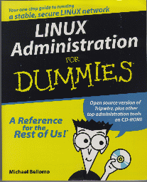

Linux administration? What is this book really about? Was it system administration similar to the classic ``UNIX System Administration Handbook'' by Nemeth et al., except with particular emphasis on Linux? Was it network administration dealing with hubs, switches, bridges, routers, etc.? What was on the CD-ROM, and how did it apply to administration?
After reading this book, I'm not sure I know any answers. In fact, I think the best feature of the book is that several times the author refers to Linux for Dummies, 2nd Edition to find basic information. The book lacks organization, the highlighted examples often have the wrong fonts for the computer/user dialog, and sections often contain contradictory paragraphs. In general, the writing style is obnoxious.
It would appear that the author either never heard of (or never used) the commands more or less except in the MS-DOS piping sense. In a few instances, despite admonishing the reader not to change anything in the file they want to view (as part of the example), he encourages using vi to view, despite warning that it may be tricky to use. It is just too easy for the beginner to err when using vi as root on a live system.
The book is concerned about users on a ``Linux system'', but doesn't say how they may be there. Nothing about, for example, Cyclades multi-port cards to allow multiple simultaneous users, or even the suggestion that family members take turns at the single-seat console. Just how is the na<\#239>ve user with a desktop computer going to know what is meant by a ``Linux terminal''? Though he does mention dual-boot on one page, it is more to confuse the reader than to explain it. He was correct in stating that one can dual-boot via LILO; he missed the opportunity to suggest that, in addition, one could boot from a floppy disk, via loadlin from MS-DOS, from a CD-ROM, etc.
So from the limited discussion, I guess the reader must assume one is attached to the Ethernet for multiple users. The discussion of Ethernet cabling is lacking, in particular there is no mention of a hub when describing 10-BaseT. The author leads the reader to assume that ping stops automatically, but on Red Hat Linux 5.2 or 6, one enters CTRL-C after a reasonable time to get ping statistics about network connections.
Chapters 8 and 9 offer simple introductions to the basic protocols: TCP and UDP, and Internet addresses, masks and services. However, the explanation and example of subnets is wrong.
Chapter 11 considers UUCP and FTP quite superficially. That is not a problem with UUCP, because few people use it these days. But, when discussing setting up an anonymous FTP server, the author lists what purports to be a step-by-step method. Unfortunately, he doesn't describe what should be in /ftp/bin nor whether an /ftp/lib directory is needed. Why would technical book authors not try out their examples?
A whole chapter (12) was devoted to SLIP, but then the author claims it has basically been superceded by PPP, which is treated in a too-brief chapter (13). The chapters in Part V on Network File and Machine Sharing appear to have been written about five years ago, particularly those on NFS, NIS, and DNS.
Chapter 18, on printing, seems somewhat useful. I will note that if one wants to print on a printer on an Apple network, it is not always necessary to do so through Netatalk. Newer Apple Macintosh Laserwriters can be assigned their own IP numbers and names and can be accessed by following the instructions in the manual for printing from a networked UNIX machine.
Part VI, Electronic Mail, News and Web Browsing, is brief but somewhat better than most of the other parts. I was surprised that the author didn't suggest creating a message file to someone, using vi, and then giving the command ``mail someone@domain < message''. I guess he had never used the ``mail'' program when it was the only choice before such programs as Elm, Pine, and Netscape were written. I agree with his choice of Pine for e-mail and Usenet news, and Netscape for web browsing.
Part VII, Network Security, is mostly just buzzwords. For example, let me quote a couple of sentences. ``TCFS, the Transparent Cryptographic File System, is a newer version of CFS with greater capabilities. Its chief advantage is that TCFS is user transparent, which is the same attribute that makes CFS so easy to use and administer.'' OK, this tells us that it is newer, but what are the ``greater capabilities''? The accompanying CD-ROM dataplate contains such programs as Tripwire, Mon, Sudo, etc., but newer versions or better replacement tools can be downloaded.
Part VIII, Linux Disasters and Recovery Techniques, has a few commonsense ideas. One is to make regular backups. Others are to keep a good set of Linux reference material around, read Linux newsgroups, and make friends with other administrators.
Part IX is the ``for Dummies'' Part and lists some utilities, tools and web sites. Since the author seemed so inept through most of this book, I have no reason to think his personal ratings and recommendations are useful. I will note that I do think this part was written more recently than many other chapters in his book.
Overall, I think the bulk of this book was a reworked version of a UNIX system administration book from roughly five years ago. For someone who has never been previously exposed to system administration or network administration, looking up buzzwords from this book on a web browser might actually be helpful. Anyone who set up their Linux box following Linux for Dummies, 2nd Edition, or Linux for the Compleat Idiot, or The No BS Guide to Linux will probably be disappointed if they move on to this book. I don't understand how two reviewers on Amazon.com could give this book four stars out of five. I'd give it one star out of five, at best.
Harvey Friedman can be reached via e-mail at fnharvey@u.washington.edu.